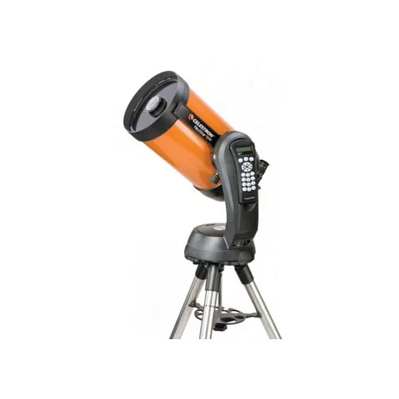
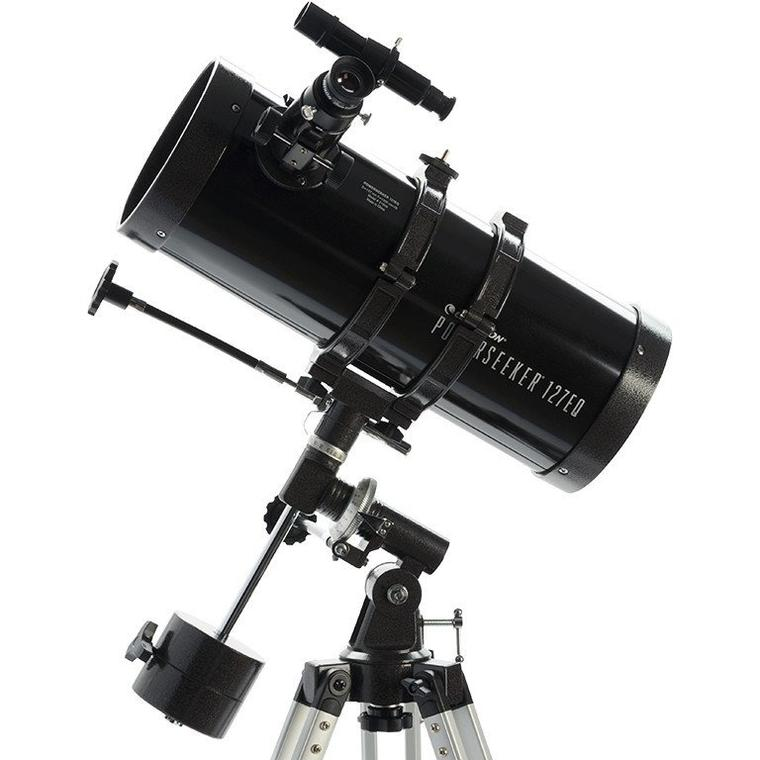

Gallerij
-

- 
- 
Celestron staat bekend om zijn pionierswerk in telescopen en optische technologieën, waarmee we nieuwsgierigen helpen de wonderen van het heelal te ontdekken. Onze telescopen zijn zorgvuldig ontworpen om observaties helder en toegankelijk te maken, of je nu voor het eerst naar de sterren kijkt of al een ervaren sterrenkijker bent. Gedreven door innovatie en precisie, biedt Celestron producten die mensen verbinden met de schoonheid van het universum en hen aanmoedigen om verder te kijken dan wat zichtbaar is. Wij geloven dat wetenschap voor iedereen toegankelijk moet zijn en werken aan duurzame oplossingen die zowel educatie als exploratie ondersteunen.
Celestron is innovatief dankzij geavanceerde technologieën zoals automatische tracking en hoogwaardige optiek. Hun telescopen maken astronomie toegankelijk voor iedereen, met precisie en gebruiksgemak dat voortdurend grenzen verlegt in sterrenkunde.
Celestron staat bekend om zijn precisie door zorgvuldig ontworpen optiek en nauwkeurige trackingtechnologie. Dit maakt hun telescopen ideaal voor gedetailleerde observaties en scherpe beelden van hemellichamen, zelfs bij hoge vergrotingen.
Celestron biedt betrouwbaarheid door duurzame materialen en strenge kwaliteitscontrole. Hun telescopen presteren consistent onder diverse omstandigheden, waardoor zowel beginners als ervaren astronomen jarenlang kunnen rekenen op nauwkeurige en stabiele waarnemingen.
Celestron maakt astronomie toegankelijk met gebruiksvriendelijke telescopen en duidelijke handleidingen. Hun modellen variëren in prijs en functies, zodat zowel beginners als experts eenvoudig kunnen genieten van sterrenkijken en ontdekking.